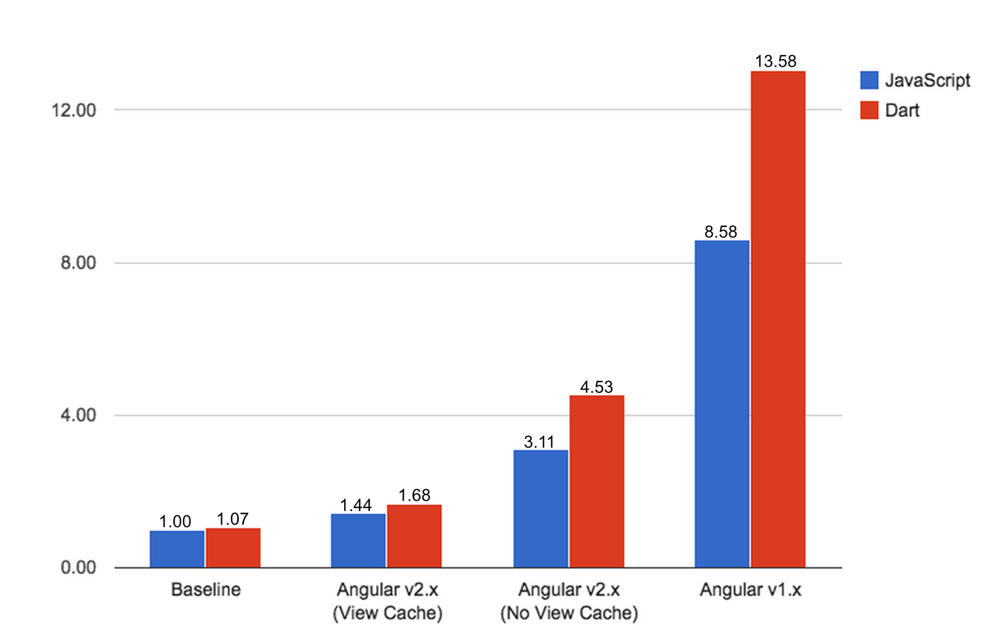
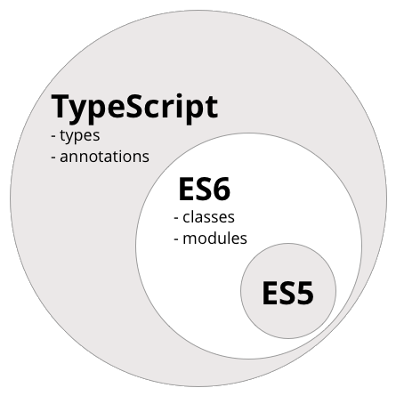

Intro to Angular 2
Josh Brown
Software Engineer - CTM Labs
@JoshAntBrownMotivation
Web Standards
Performance
Simple Cognitive Model
Angular was originally developed in 2009
Web Standards
Shadow DOM replaces Transclusion
ES6 Modules replaces Angular Modules
Performance
Simple Cognitive Model
Angular 1.x has many concepts
Concepts have a learning curve
Angular 1.x Concepts
- Controller
- Factory
- Service
- Provider
- Directive
- Transclusion
- Module
Angular2 Component
Typescript
Typescript = JavaScript (ES5) + ES6 + Types and Decorators
Annotations
An Angular 2 feature using decorators to append metadata to a class
@Component({
selector: 'app'
})
export class App {}
Transpilers to the rescue
Typescript 'transpiles' to vanilla JavaScript to run in the browser
ES5 Syntax
var TodoApp = ng.core.Component({
selector: 'todo-app',
templateUrl: 'todo-app.html'
}).Class({
constructor: function() {
this.tasks = [];
}
});
Template Syntax
- {{}} = Interpolation
- [] = Properties
- () = Events
- # = Local Var
- * = Template
import {Component, NgIf} from 'angular2/core';
@Component({
selector: 'greeting',
templateUrl: 'greeting.html',
directives: [NgIf]
})
export class GreetingComponent {
name: string = 'World';
canChangeName: boolean = true;
changeName(name) {
this.name = name.value;
this.canChangeName = false;
}
}
Hello {{name}}
<input #myName type="text">
<div *ngIf="!canChangeName">
Sorry, you can only change your name once.
</div>
Bootstrapping
Angular 1.x Bootstrap
- Create Module
- Declare ng-app
- Create Controller
- Attach items to $scope
- Declare Controller
- Create Template
Angular 1.x
var app = angular.module('app', []);<body ng-app="app"></body>
app.controller('greeetingCtrl', function($scope) {
$scope.name = 'World';
});
<body ng-app="app">
Hello {{name}}
</body>
Angular 2 Bootstrap
- Create Component
- Create Template
- bootstrap
- Transpilation
Angular2 Bootstrap
One more thing...
What about this line...
import {bootstrap} from 'angular2/platform/browser';Other Platforms?
- Browsers
- Web Workers
- Server Rendering
Server Rendering
- SEO Friendly
- Faster Browser Rendering
- Better Accessibility Support
- Code Once
Thanks for listening!
Any questions?
Check these out: